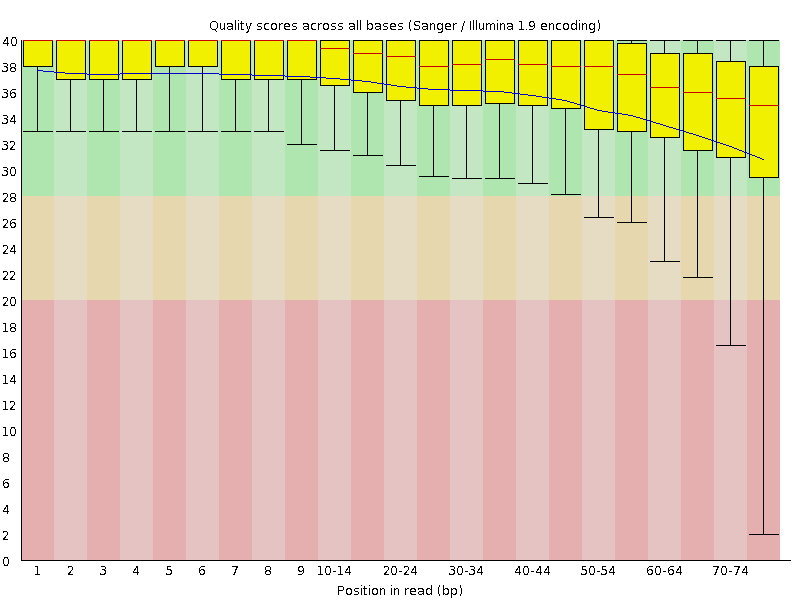
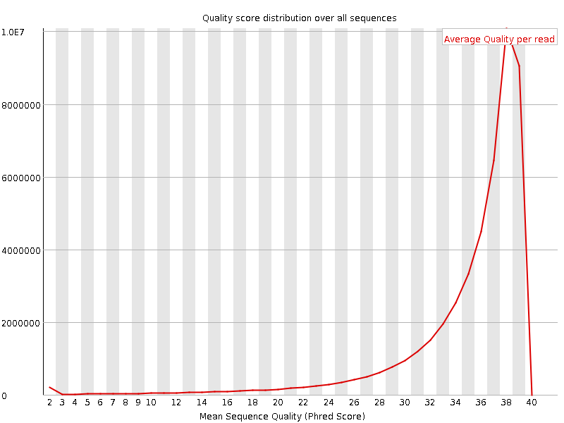
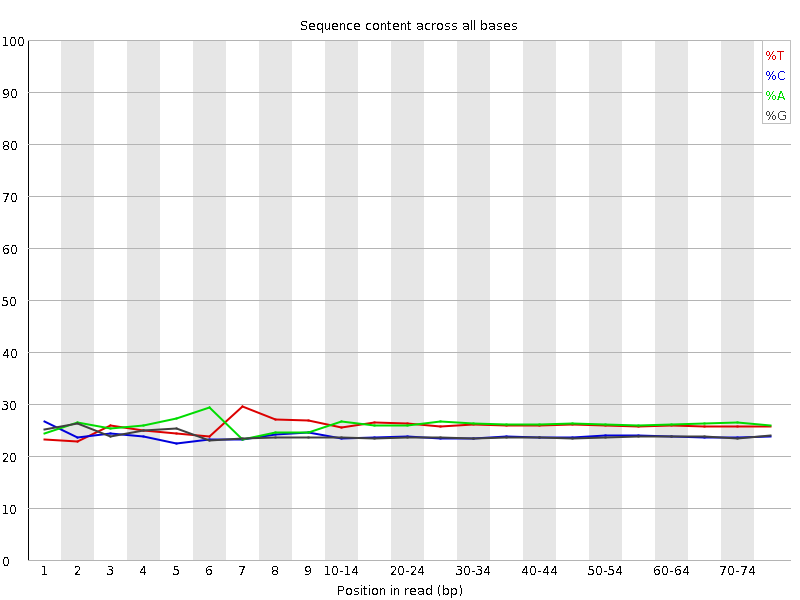
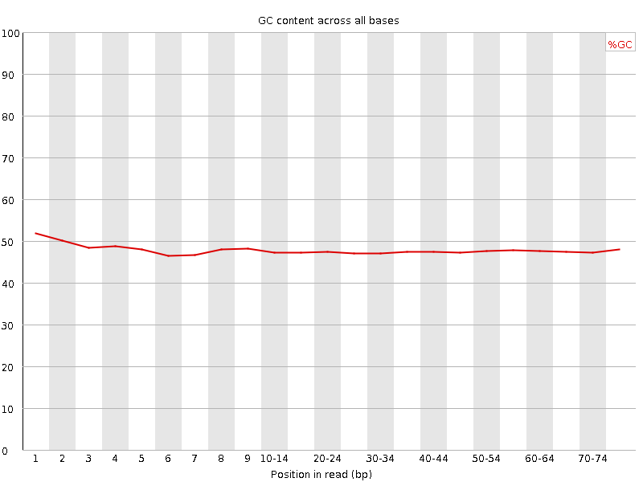
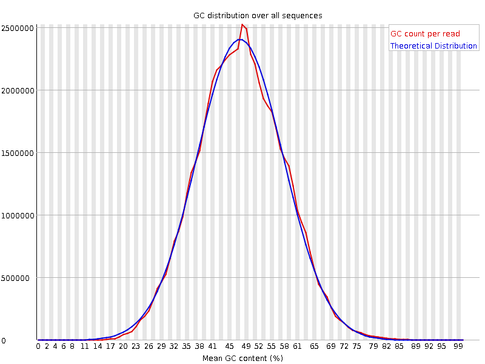
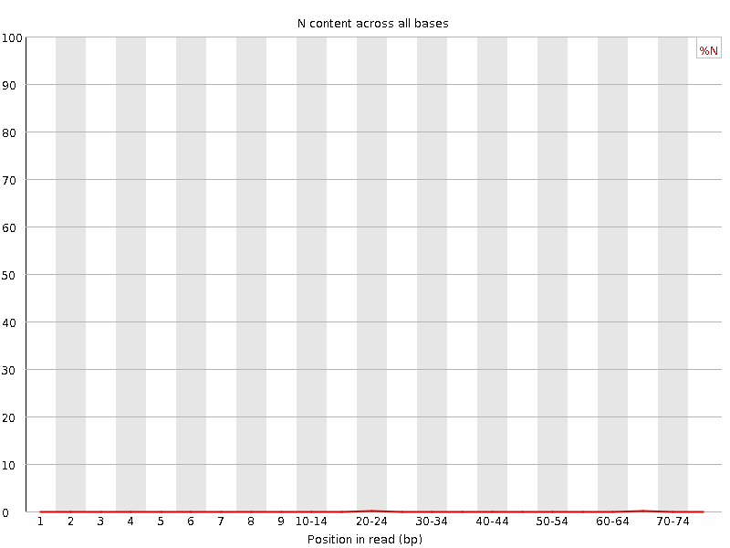
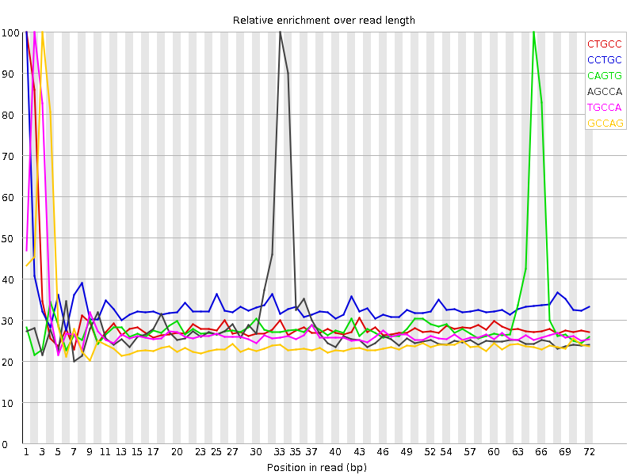

![[OK]](Icons/tick.png) Basic Statistics
Basic Statistics
| Measure | Value |
|---|---|
| Filename | SRR307898_2.fastq |
| File type | Conventional base calls |
| Encoding | Sanger / Illumina 1.9 |
| Total Sequences | 47000102 |
| Filtered Sequences | 0 |
| Sequence length | 76 |
| %GC | 47 |
Per base sequence quality

Per sequence quality scores

Per base sequence content

Per base GC content

Per sequence GC content

Per base N content

Sequence Length Distribution

![[FAIL]](Icons/error.png) Sequence Duplication Levels
Sequence Duplication Levels

![[WARN]](Icons/warning.png) Overrepresented sequences
Overrepresented sequences
| Sequence | Count | Percentage | Possible Source |
|---|---|---|---|
| CTGCCAGTAGCATATGCTTGTCTCAAAGATTAAGCCATGCATGTCTAAGT | 196651 | 0.41840547494982033 | No Hit |
| CCTGCCAGTAGCATATGCTTGTCTCAAAGATTAAGCCATGCATGTCTAAG | 154019 | 0.32769928882282 | No Hit |
Kmer Content

| Sequence | Count | Obs/Exp Overall | Obs/Exp Max | Max Obs/Exp Position |
|---|---|---|---|---|
| CTGCC | 6123745 | 2.1544263 | 7.315677 | 1 |
| CCTGC | 5883635 | 2.0699518 | 6.14233 | 1 |
| CAGTG | 6048025 | 1.931281 | 6.5698633 | 65 |
| AGCCA | 5962505 | 1.8824267 | 6.6523204 | 33 |
| TGCCA | 5612060 | 1.7913567 | 6.3547764 | 2 |
| GCCAG | 5144190 | 1.7907431 | 6.9268346 | 3 |
| CCATG | 5486790 | 1.7513708 | 6.429027 | 35 |
| TGAAA | 6568495 | 1.7259016 | 5.6616917 | 68 |
| AAAGA | 6543930 | 1.7006636 | 5.699662 | 25 |
| TGTCT | 5647485 | 1.6718637 | 6.15451 | 19 |
| GCCAT | 5035525 | 1.6073279 | 6.3636827 | 34 |
| CAAAG | 5544600 | 1.5881985 | 5.891301 | 24 |
| AAGAT | 5949435 | 1.5632408 | 5.6139817 | 26 |
| TGCTT | 4993045 | 1.4781253 | 5.932482 | 15 |
| CCAGT | 4621140 | 1.4750572 | 6.0810285 | 4 |
| GTGAA | 5080120 | 1.4718076 | 5.7264557 | 67 |
| TCTCA | 4796285 | 1.4038097 | 5.718404 | 21 |
| AACTG | 4776045 | 1.383163 | 5.7573338 | 71 |
| AGTGA | 4690645 | 1.3589692 | 5.620931 | 66 |
| AAGCC | 4284275 | 1.3525915 | 6.020141 | 32 |
| ATGCT | 4571670 | 1.3385981 | 5.690233 | 14 |
| CATGC | 4146900 | 1.3236809 | 6.0433984 | 36 |
| AAACT | 4879765 | 1.2816721 | 5.1789713 | 70 |
| ACTGC | 3994140 | 1.2749203 | 6.096422 | 72 |
| GAAAC | 4448175 | 1.2741379 | 5.630587 | 69 |
| CATGT | 4348035 | 1.2731172 | 5.636971 | 40 |
| CTCAA | 4384340 | 1.2692204 | 5.53074 | 22 |
| GCATG | 3930825 | 1.2552078 | 6.0403385 | 39 |
| AGCAT | 4310725 | 1.2484045 | 5.5500054 | 9 |
| ACAGT | 4284690 | 1.2408645 | 5.531399 | 64 |
| CTTGT | 4096275 | 1.2126484 | 5.723826 | 17 |
| TGCAT | 4134920 | 1.2107165 | 5.5504317 | 38 |
| GTCTC | 3743310 | 1.2080529 | 5.99143 | 20 |
| ATGCA | 4150135 | 1.2018968 | 5.537614 | 37 |
| TCAAA | 4560775 | 1.1978892 | 5.0674767 | 23 |
| AGATT | 4402030 | 1.1694283 | 5.275018 | 27 |
| GCTTG | 3565230 | 1.1510385 | 6.083826 | 16 |
| TACAG | 3973100 | 1.1506267 | 5.415553 | 63 |
| GGCCG | 2880545 | 1.1056505 | 6.7714458 | 57 |
| ATGTC | 3774495 | 1.105183 | 5.471206 | 41 |
| TTGTC | 3617735 | 1.0709829 | 5.4536123 | 18 |
| CAGTA | 3502555 | 1.0143548 | 5.3059654 | 5 |
| GCCGG | 2459860 | 0.94417745 | 6.679504 | 58 |
| CGGCC | 2442410 | 0.937108 | 6.718927 | 56 |
| AGTAC | 3105290 | 0.8993052 | 5.121172 | 48 |
| TAGCA | 3078305 | 0.8914903 | 5.2536297 | 8 |
| GTACA | 3021630 | 0.87507695 | 5.065241 | 62 |
| TATGC | 2801920 | 0.8204103 | 5.220613 | 13 |
| CTAAG | 2822125 | 0.8172994 | 5.1598015 | 45 |
| AGTAG | 2751390 | 0.7971301 | 5.1671724 | 6 |
| GTAGC | 2424700 | 0.7742655 | 5.5182834 | 7 |
| GCATA | 2667895 | 0.7726338 | 5.0110903 | 10 |
| CACGG | 2102840 | 0.7320193 | 5.8284106 | 54 |
| TAAGC | 2374220 | 0.6875842 | 5.0282426 | 31 |
| GTCTA | 2298510 | 0.67301035 | 5.0531864 | 43 |
| GGTAC | 2089715 | 0.66729665 | 5.291563 | 61 |
| ACGGC | 1892170 | 0.658683 | 5.8823485 | 55 |
| GCACG | 1683095 | 0.5859019 | 5.667399 | 53 |
| CGCAC | 1659700 | 0.5775289 | 5.7369204 | 52 |
| ACGCA | 1717575 | 0.54225683 | 5.19955 | 51 |
| CCGGT | 1430820 | 0.5035837 | 5.761157 | 59 |
| TACGC | 1339695 | 0.42762756 | 5.061195 | 50 |
| GTACG | 1306440 | 0.41717798 | 5.08103 | 49 |
| CGGTA | 1145885 | 0.36590886 | 5.0744443 | 60 |